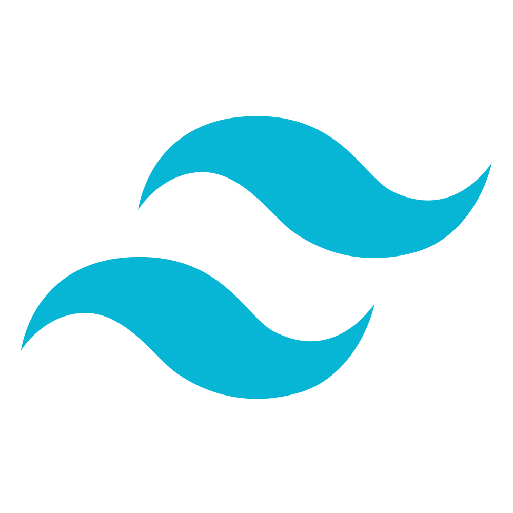
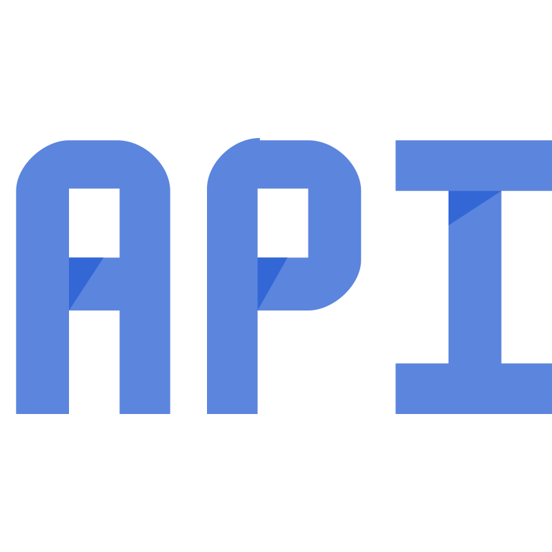
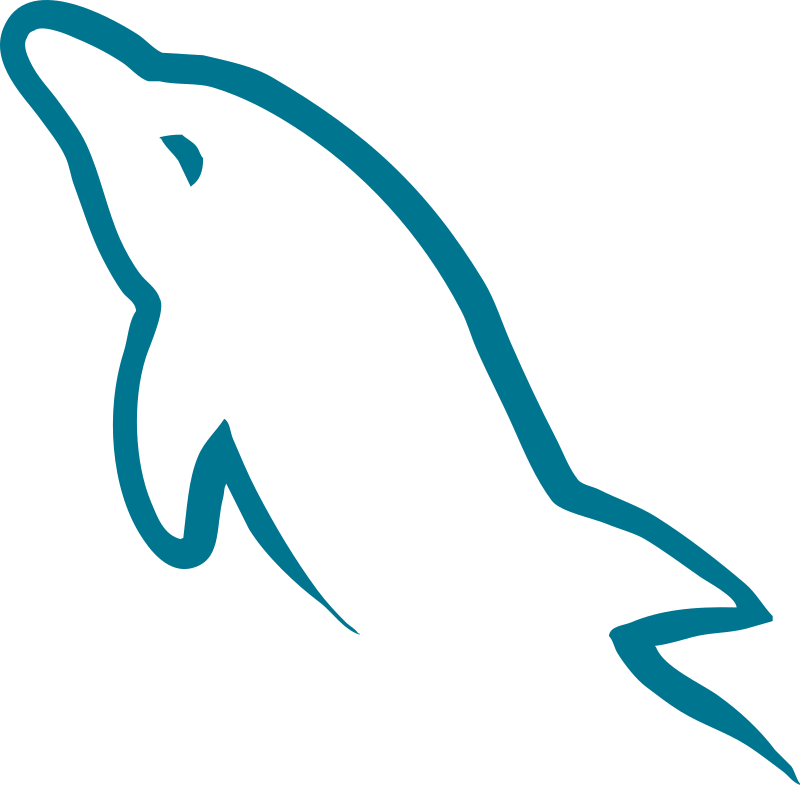
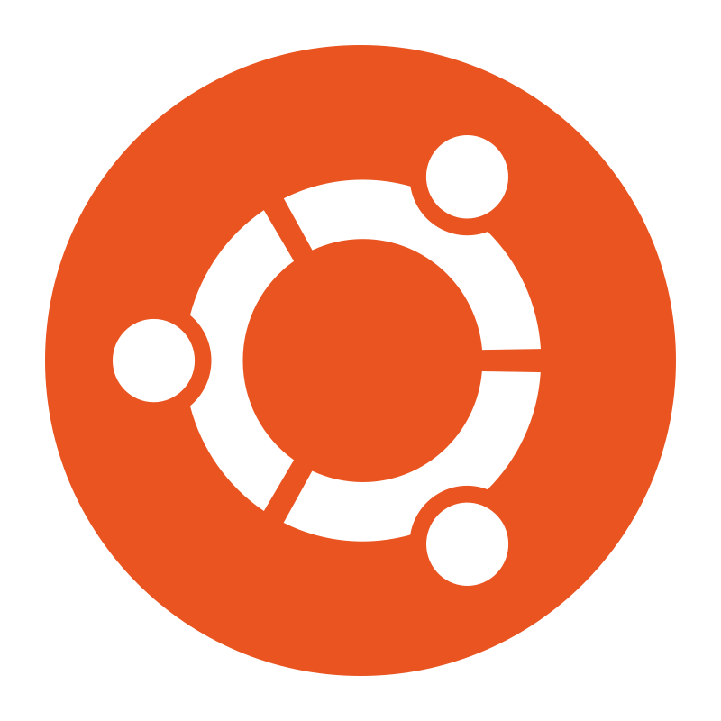
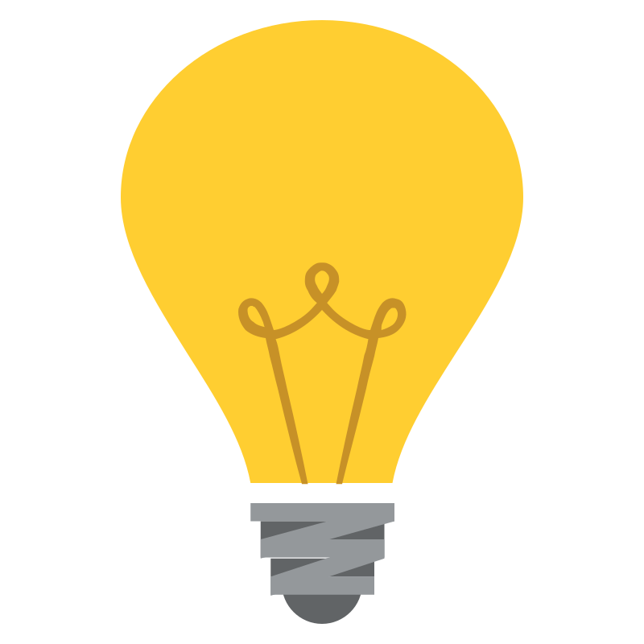
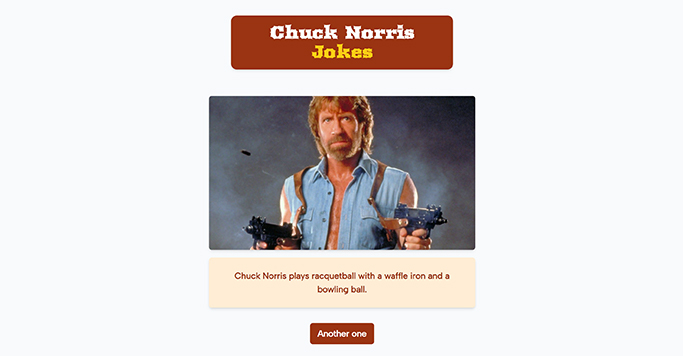

Valentin Grenier, enchanté !
Je suis développeur web full-stack passionné par la création d'interfaces web répondants à des problématiques complexes.
+15 sites
développés
+30 entreprises
accompagnées
5 années
en freelance
Mon savoir-faire
Opérationnel du front-end au back-end, j'utilise des technologies dans l'ère du temps pour la maintenabilité de mes projets et pour répondre à des problématiques précises.
Technologies front-end
J'aime concevoir de belles interfaces modernes, épurées et axées sur l'expérience utilisateur.



Technologies back-end
Passer du côté obscure de la Force pour gérer l'architecture d'un site, sa base de données ou encore son hébergement.




Compétences transverses
De WordPress avancé jusqu'aux notions en UX et UI design, j'ai une vision globale d'un projet et de sa gestion.






À propos
Je suis dévoué
J’adore mon métier et je ne vois pas le temps passer quand je tape des lignes de code. Je sais pourquoi je me lève le matin, et j'aime relever chaque jour de nouveaux défis.
Je sais travailler en équipe
J’apprécie pouvoir gérer une équipe et la tirer vers le haut. Je suis convaincu que l’esprit d’équipe est essentiel pour accomplir de magnifiques choses.
Je recherche constamment un défi
Je m’intéresse constamment à des environnements et à des sujets qui me sont inconnus. Je continue de me former régulièrement et je ne cesse jamais de travailler sur des projets personnels ou professionnels.
Mon parcours
Mon parcours est assez atypique. J’ai commencé mes études post-bac dans le domaine du management, puis j’ai obtenu un master en communication et stratégie digitale. En parallèle, de mon cursus universitaire, je me suis formé en autodidacte sur le développement web et plus spécifiquement sur WordPress, avant de me lancer en freelance en tant que développeur WordPress et web designer.
Mais j’ai voulu voir encore plus loin pour travailler sur des projets autres que la création et l’actualisation de sites WordPress. C’est pourquoi j’ai rejoints l’école O’clock pour une formation intensive de 6 mois, afin d’obtenir un Titre Professionnel de Développeur Web et Web Mobile, certifiant mes compétences et ma détermination.
En savoir plusMes projets réalisés
Pour mettre en application mes compétences acquises, j'ai réalisé plusieurs projets professionnels et personnels.

Chuck Norris Jokes
Utilisation de l'API "Chuck Norris API" pour récupérer des données, changement d'image à chaque chargement.